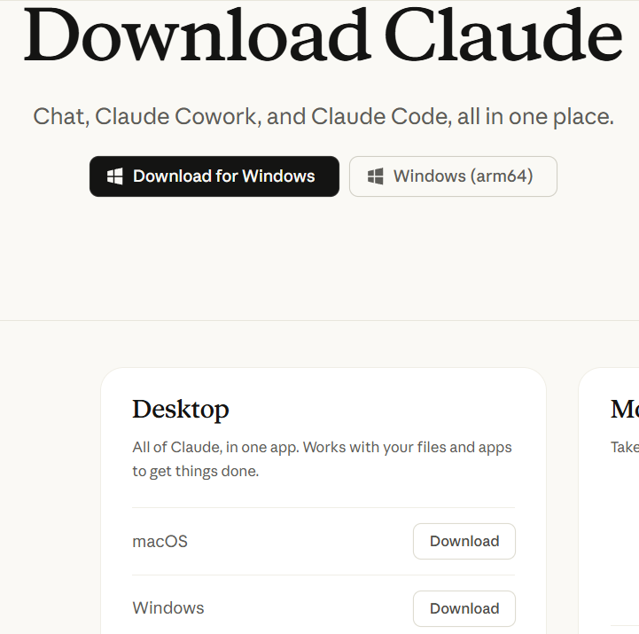
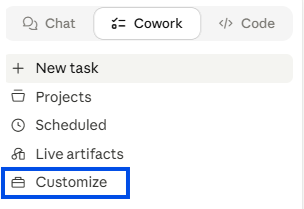
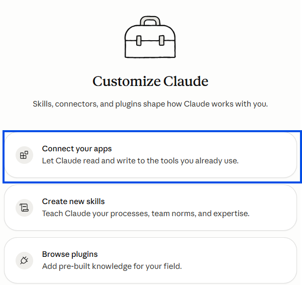
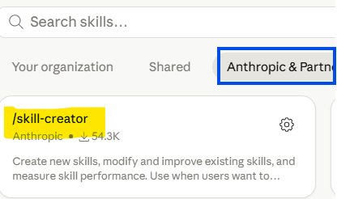

Claude has three modes — today we're setting up Co-work
Chat is the AI assistant you already know — great for questions, drafting, and thinking through problems. Co-work connects Claude to your real tools — email, calendar, Drive, Slack — so it can do actual work alongside you. Code is purpose-built for technical and coding tasks.
This workshop focuses on Co-work. The setup below gets you ready to use it from day one.
- Follow the steps in order — each one builds on the last
- If you get stuck, note where and we'll sort it at the start of the workshop
⚙️ Before you start — install Claude ⏱ ~5 min
Download the Claude Desktop App
Go to claude.ai/download and download the app for your operating system (Windows or Mac). Install it like any other app.

Sign in with your Fabric account
Open the app and sign in using your @getfabric.com email address. This connects you to the Fabric team plan — do not use a personal email or you'll be on a free account without the full feature set.
If you don't yet have a Claude account under your Fabric email, create one at claude.ai using your @getfabric.com address first, then sign in to the app.
Create a Co-work project
A project is your persistent workspace — Claude remembers your context and connected tools across every session
In the Claude desktop app, click Work in a project at the bottom of the prompt box, then click + Create new project. Choose Start from scratch.

Start from scratch creates a fresh project folder on your computer. Import a project brings over a project you already started in Chat. Use an existing folder is for if you already have a folder set up.
You'll see a form with a few fields. Fill them in as follows:

- Name (required) — call it my-agent
- Instructions — this is Claude's memory for the project. Skip it for now — you'll fill it in during Step 2.
- Add files — leave blank for now
- Choose project location — leave as the default
Click Create when done.
You'll land in your new project. Notice the project name badge at the bottom of the prompt — that confirms you're working inside my-agent, not in a general chat.

Connect your apps
Connectors let Claude read and interact with your real tools — Gmail, Drive, Calendar, Slack
What is a connector? Think of it as a plug adapter. Claude can't access Gmail by default — but when you connect Gmail, you give Claude permission to search and read your emails on your behalf. You stay in control: Claude asks before doing anything.
Connect these four — the first three are required, Slack is optional but recommended:
Find and read documents, meeting notes, and decks from your Drive
Search and read emails; draft replies without leaving Claude
Read your schedule; use it in meeting prep and briefing skills
Read channels and DMs; surface context for meeting prep
In the left sidebar, click Customize. This is where skills, connectors, and plugins live.

On the Customize screen, click Connect your apps — this opens the connectors panel where you can link Claude to your tools.

In the connectors list, find Google Drive and click Connect. Sign in with your Google account when prompted and grant the requested permissions.
Find Gmail in the connectors list and click Connect. Use the same Google account as Drive.
You'll see a Google permissions screen — read it and click Allow. Claude needs this access to search your emails during the workshop.
Find Google Calendar in the connectors list and click Connect. Same Google account, same process.
Find Slack in the connectors list and click Connect. Sign in to your company Slack workspace when prompted.
For each connector, permissions should already be set to "Ask before acting" by default in our org — meaning Claude will always confirm with you before sending an email, posting a message, or making any change.
Take a moment to verify this is the case for each connector you've added. If anything looks different, flag it at the start of the workshop and we'll sort it together.
Set up the Skill Creator
Skills teach Claude how to do specific tasks your way — we'll build one together in the workshop
What's a skill? If a connector gives Claude access to your tools, a skill tells Claude how to use them for a specific task. A skill is a saved, reusable prompt that encodes your process — so instead of explaining what you want every time, you just invoke the skill and Claude already knows.
In the left sidebar, click Customize, then select Create new skills.

You'll see your Skills panel with any personal skills listed. Click the + button in the top right to add a new skill.

A dropdown appears with two options. Click Browse skills to explore the skills library.

In the skills library, click the Anthropic & Partners tab. Find /skill-creator and install it. This is the skill we'll use in the workshop to build your first custom skill.

The Skill Creator lets you teach Claude a repeatable process — once built, you invoke it with a slash command and Claude knows exactly what to do.
Come with a project in mind
The workshop is hands-on — you'll build something real. Spend a few minutes thinking about what that could be.
During the workshop we'll set up your project together — including instructions, context, and your first prompt. The more specific your idea, the more you'll get out of the session.
Good Co-work projects are usually things you do repeatedly that require pulling context from multiple places — emails, docs, calendar, Slack. Some examples to get you thinking:
- A daily or weekly briefing that summarizes what's on your plate
- Meeting prep — pulling relevant emails, docs, and context before a call
- A first-draft generator for recurring reports, updates, or outreach
- A tracker or digest for a specific workstream (deals, projects, customers)
- Anything where you currently spend time hunting for context before you can do the real work
You don't need a detailed spec — just a clear enough idea that we can build it together in the room. Something like:
"Every Monday morning I want a summary of my open deals, what's changed since last week, and what I need to follow up on — pulled from my email and calendar."
The best projects are ones that would genuinely save you time if they existed. Don't aim for impressive — aim for useful.
Set up your Cowork folder
Create the folder structure Claude reads automatically — so you never have to re-explain who you are
Your first 15 minutes with Claude Cowork. These three folders become Claude's persistent memory for your work. Set them up once and Claude reads them at the start of every session.
- Minutes 0–5: Create the folder structure on your computer —
Claude Cowork/with three subfolders: About Me, Outputs, and Templates. Then build your two core files inside About Me. - Minutes 5–7: Paste the global instructions into Settings → Cowork → Edit Global Instructions.
- Minutes 8–15: Ask Cowork to create a template and explore your folder structure so you feel comfortable with it.
Create a new folder on your computer named Claude Cowork. Inside it, create three subfolders:
About Me/ ← Claude reads this automatically
Outputs/ ← Claude saves deliverables here
Templates/ ← Reusable structures
About Me is the only folder Claude reads automatically. Outputs and Templates are only accessed when you point Claude to a specific file — so they never eat your token budget unless you ask.
This file tells Claude who you are, how you think, and how you want it to write for you. Claude reads it before every single task.
If you already have an about-me file from a prior training, upload it to a Cowork session and prompt:
This is my about-me file and I need to save tokens. Ask me questions on how to trim effectively until we have the perfect document.
If you're starting from scratch, open a new Cowork session and paste this prompt:
You are building my about-me.md file for my Cowork folder. This file will be read by Claude at the start of every session to help you do my job with me. It needs to be concise and high-signal.
Your job: interview me using AskUserQuestion (20 questions), then compile the answers into a condensed about-me.md under 2,000 tokens.
## How to interview me
Use AskUserQuestion for every question. One question at a time. If I give a vague answer, push back — ask for a specific example. Follow interesting threads.
## What to cover
WHO I AM (3 q): My role, company, industry. Who I work with. What a good week looks like.
HOW I WORK (4 q): Daily tools. How I start a task. My review process. What "done" looks like.
WHAT GOOD LOOKS LIKE (4 q): Best output I've produced recently. What separates great from average. What I react to in others' work.
WHAT I HATE (4 q): Bad work examples. Industry patterns that make me cringe. What's usually off when Claude gets it wrong.
MY RULES (3 q): Hard lines I won't cross. Non-negotiables every piece of work must have.
MY OPINIONS (3 q): Beliefs my peers would push back on. Overrated vs. underrated tools/methods.
## Output format
After the interview, compile into a single markdown file — condensed prose and bullet points, no raw Q&A transcripts. Target: under 2,000 tokens. Save as about-me.md in my About Me/ folder.
Your targets, your strategy, what you're focused on, what you're saying no to. Update it when priorities change — maybe once a quarter.
In the same Cowork session you used for about-me (just keep prompting after), paste this:
You are building my my-company.md file for my Cowork folder. This file tells Claude what I'm working toward right now. My about-me.md already covers who I am — this file is ONLY about goals, strategy, and decisions. No overlap.
Your job: interview me using AskUserQuestion (6–8 questions), then compile the answers into a condensed my-company.md under 1,000 tokens.
## What to cover
GOALS (3–4 q): Top 2–3 goals for this year. Which platforms/channels/markets matter most. The one metric that would make this year a success. Revenue, audience, or product milestones.
DECISIONS (3–4 q): What I'm actively saying no to. What I recently stopped doing and why. Where most of my time and energy goes this quarter. Any bets I'm making that others aren't.
## Output format
Short sections, bullet points, no filler. Target: under 1,000 tokens. Save as my-company.md in my About Me/ folder.
Cowork doesn't need to know your Tuesday deadline. It needs to know your north star. Keep this file short and update it when something actually changes.
Global Instructions is a prompt Claude Cowork reads before any task. It tells Claude what your folders mean and when to read them.
Go to Settings → Cowork → Edit Global Instructions. Delete whatever's there and paste this (adjust the file names if yours are different):
I usually start my Cowork session by pointing you to my Cowork folder.
Before any and every single task, you must read every file in About Me/:
- about-me: it's me, who I am, what I love and hate
- my-company: where I work, my role, my goals
Never read the folders Outputs/ or Templates/ unless I specifically point you to a file.
Save all deliverables in Outputs/ under a subfolder named after the project.
If the brief is unclear, use AskUserQuestion. Don't fill gaps with filler. Don't over-explain. Deliver the work.
Why this matters: If your About Me files are under 6,000 tokens total, Claude reads all of them completely — every session. You never re-explain who you are or what you're working on.
The Templates folder fills itself. When Cowork builds something you like — a report, an email, a brief — say one sentence at the end of your session:
Save this as a template in Templates/.
Claude strips the content, keeps the skeleton (sections, order, format, length), and saves it. Next time you need something similar:
Use the template in Templates/[name of the file].
To feel comfortable with your folder, ask Cowork to create a template from the about-me interview session, then go open the Templates folder on your computer and check it.
You're all set for the workshop!
If anything didn't work, make a note of where you got stuck — we'll go through it together at the start of the session. Even partially set up is fine.